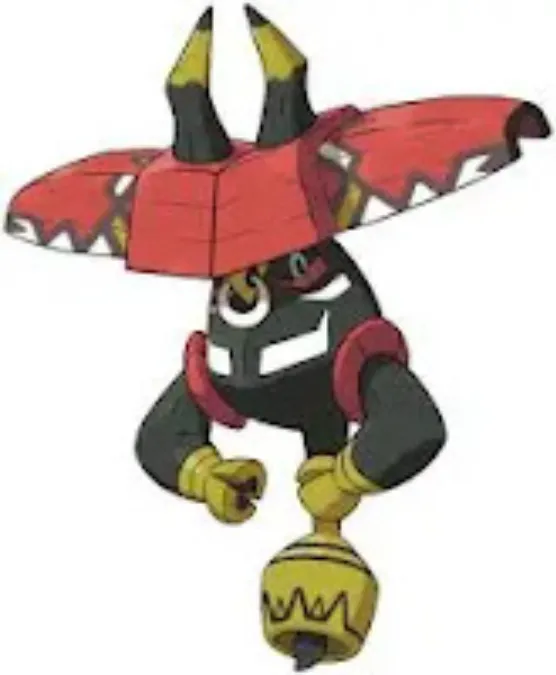
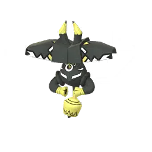

Raid Boss Overview – Tapu Bulu
Tapu Bulu is a Legendary Pokémon from the Alola region and one of the four island guardians. In Pokémon GO raids, it stands out because of its unusual Grass/Fairy typing, giving it a mix of strong resistances, solid PvP value, and useful raid coverage.
- Type: Grass / Fairy
- Role: Defensive attacker with strong anti-Dragon utility
- Known as the guardian deity of Ula’ula Island
Why Tapu Bulu Matters
Strong PvP Potential
Tapu Bulu performs well in PvP because its typing pressures several popular meta Pokémon.
- Strong against:
- Dragon-types
- Dark-types
- Water/Ground cores
- Can function as a bulky damage dealer
- Applies constant shield pressure
Useful Fairy-Type Raid Attacker
While not the absolute strongest Fairy attacker, Tapu Bulu is still valuable in raids.
- Useful against:
- Dragon raid bosses
- Fighting-type bosses
- Dark-type bosses
- Benefits from strong Fairy-type charged moves
Unique Grass/Fairy Typing
This typing combination gives Tapu Bulu several useful resistances and matchup advantages.
- Resists:
- Water
- Electric
- Grass
- Dark
- Threatens both Water and Dragon cores
However, it also has major weaknesses:
- Weak to:
- Poison
- Steel
- Ice
- Flying
Collector & Pokédex Value
- Part of the Legendary Tapu quartet
- Limited-time raid availability
- Important for Pokédex completion
- Shiny version is highly desirable
Raid Difficulty
Overall Difficulty: ⭐⭐⭐⭐☆ (Moderate)
Solo
Not realistic
- High Legendary HP pool
- Too bulky for solo clears
Duo
Very difficult
- Requires:
- Maxed counters
- Mega support
- Weather advantage
- Optimized movesets
Trio
Possible with strong preparation
- Best results with:
- Steel-types
- Ice-types
- Mega Evolutions
4–6 Players
Comfortable range for most groups
- Easy clears with proper counters
- Little coordination required
Difficulty Factors
What Makes the Raid Easier
- Snow weather boosting Ice counters
- Cloudy weather boosting Fairy allies
- Mega Pokémon team boosts
- Strong Steel attackers
What Makes the Raid Harder
- Sunny weather boosting Grass moves
- Using random recommended teams
- Lack of Mega coordination
- Too many off-type attackers
Dangerous Moves
Tapu Bulu can become threatening depending on its moveset.
- Grass moves can pressure Water and Ground Pokémon
- Fairy moves punish Dragon-types heavily
Watch out especially for:
- Dazzling Gleam
- Grass Knot
- Megahorn
Tapu Bulu Moveset Guide
Tapu Bulu is a powerful Grass/Fairy-type Legendary Pokémon known for:
- Very high Attack stat
- Strong Grass-type damage
- Heavy charged move pressure
- Excellent anti-Dragon utility
Its moveset allows it to perform well in:
- Master League PvP
- Raid battles
- Gym offense
Fast Moves
Fast moves determine Tapu Bulu’s energy generation and battle pacing.
Fast Moves Table
| Fast Move | Type | PvE Power | PvP Power | Energy Gain | Notes |
|---|---|---|---|---|---|
| Bullet Seed | Grass | Low | Low | Very High | Best energy generation |
| Rock Smash | Fighting | Moderate | Weak | Average | Rarely optimal |
Best Fast Move: Bullet Seed
Why It’s Best
- Extremely fast energy generation
- Allows rapid charged move usage
- Essential for PvP pressure
Best Uses
- Master League
- Raid battles
- Gym offense
Charged Moves
Charged moves define Tapu Bulu’s real offensive value.
Charged Moves Table
| Charged Move | Type | PvE Power | PvP Power | Energy Cost | Purpose |
|---|---|---|---|---|---|
| Grass Knot | Grass | High | Strong | Medium | Main Grass-type STAB move |
| Nature’s Madness | Fairy | Strong | Very Strong | Low-Medium | Signature Fairy pressure move |
| Dazzling Gleam | Fairy | High | Moderate | High | Heavy Fairy-type nuke |
| Megahorn | Bug | High | Strong | Medium-High | Coverage against Psychic & Dark |
| Solar Beam | Grass | Massive | Slow | Very High | Huge burst damage option |
Best Charged Moves
Best PvP Moveset
- Bullet Seed
- Nature’s Madness
- Grass Knot
Why?
- Excellent shield pressure
- Fast energy cycling
- Strong neutral coverage
- Consistent pressure against bulky teams
Best PvE Moveset
- Bullet Seed
- Grass Knot
Why?
- Highest consistent Grass-type DPS
- Reliable energy generation
- Strong against Water, Ground, and Rock bosses
Elite & Signature Move
Some moves may require:
- Elite Charged TM
- Special raid rotation
- Event availability
Important Exclusive Move
| Move | Type | Elite Required? | Importance |
|---|---|---|---|
| Nature’s Madness | Fairy | Sometimes Event Exclusive | Extremely Important |
Nature’s Madness Analysis
Why It Matters
- Lower energy cost than Dazzling Gleam
- Fast Fairy-type pressure
- Makes Tapu Bulu more flexible in PvP
PvP Impact
Before this move:
- Slower gameplay
- Less threatening pressure
After this move:
- Much stronger Master League performance
- Improved shield bait potential
Raid Boss Moves
Tapu Bulu’s raid boss moveset can heavily affect raid difficulty.
Possible Raid Boss Fast Moves
| Fast Move | Danger Level | Notes |
|---|---|---|
| Bullet Seed | Medium | Fast energy generation |
| Rock Smash | Low | Easier moveset to handle |
Possible Raid Boss Charged Moves
| Charged Move | Danger Level | Why It’s Dangerous |
|---|---|---|
| Grass Knot | High | Strong STAB Grass damage |
| Dazzling Gleam | Very High | Destroys Dragon and Dark attackers |
| Megahorn | High | Unexpected Bug-type coverage |
| Solar Beam | Extreme | Massive one-shot potential |
Most Dangerous Moves
Solar Beam
Why It’s Dangerous
- Huge burst damage
- Can instantly KO weak counters
- Very punishing if not dodged
Most Dangerous Against
- Water-types
- Ground-types
- Rock-types
Dazzling Gleam
Why It’s Dangerous
- Strong Fairy-type coverage
- Destroys Dragon attackers quickly
Especially Dangerous Against
- Dragon raid teams
- Dark-types
- Shadow Dragons
Megahorn
Why It’s Dangerous
- Unexpected Bug coverage
- Punishes Psychic and Dark Pokémon
Best Counters Against Dangerous Moves
| Dangerous Move | Best Counter Types |
|---|---|
| Solar Beam | Steel, Fire |
| Dazzling Gleam | Steel, Poison |
| Megahorn | Fire, Flying |
| Grass Knot | Steel, Fire |
```html
Tapu Bulu in PvP, PvE, Raids, Gyms & Special Cups
Tapu Bulu is a Grass/Fairy-type Legendary Pokémon that combines strong offensive pressure with useful defensive typing. It stands out for its powerful Grass-type damage, reliable PvP performance in certain leagues, and access to strong charged moves like Nature’s Madness and Grass Knot.
Its typing gives it advantages against:
- Water-types
- Ground-types
- Dragon-types
- Dark-types
- Fighting-types
However, Tapu Bulu also has several important weaknesses:
- Poison
- Steel
- Flying
- Fire
- Ice
PvP Performance
Great League
Tapu Bulu is rarely seen in open Great League because its CP is difficult to optimize under the league cap. Still, it can work in limited formats where its typing becomes more valuable.
What works well:
- Solid overall bulk
- Useful Fairy coverage against Dark and Fighting Pokémon
- Strong shield pressure with Nature’s Madness
Main issues:
- Weakness to common Steel-types
- Struggles against Flying Pokémon
- High investment cost
Recommended moveset:
- Fast Move: Bullet Seed
- Charged Moves: Grass Knot + Nature’s Madness
Overall, it remains a niche option that depends heavily on the cup format.
Ultra League
Ultra League is where Tapu Bulu performs much better and starts to feel genuinely threatening.
Why it works:
- Strong against Water and Ground cores
- Fairy typing pressures Dragons and Fighters
- Reliable shield pressure from Nature’s Madness
- Fast energy generation with Bullet Seed
Strong matchups:
- Swampert
- Giratina
- Poliwrath
- Virizion
- Zygarde
Difficult matchups:
- Registeel
- Talonflame
- Skarmory
- Venusaur
- Most Poison-types
Recommended moveset:
- Bullet Seed
- Grass Knot
- Nature’s Madness
Main PvP roles:
- Anti-Water attacker
- Dragon pressure
- Shield pressure specialist
In Ultra League, Tapu Bulu is surprisingly solid and often underrated.
Master League
In Master League, Tapu Bulu becomes more of a specialist pick rather than a core meta Pokémon.
Strengths:
- Strong against Kyogre and Ground-types
- Can pressure Dragons effectively
- Hits hard with Grass-type damage
Weaknesses:
- Steel-types are a major problem
- Struggles against Ho-Oh
- Loses heavily to Dialga and Metagross
Good matchups:
- Kyogre
- Garchomp
- Palkia
- Groudon
Difficult matchups:
- Dialga
- Metagross
- Ho-Oh
- Solgaleo
Recommended moveset:
- Bullet Seed
- Nature’s Madness
- Megahorn or Grass Knot
With the right support, Tapu Bulu can still surprise opponents in Master League.
Performance in Special Cups
Fantasy Cup
Tapu Bulu performs well here thanks to its Fairy typing and ability to pressure Dragons and Water-types.
Sunshine Cup
Very effective in Water-heavy formats where Grass damage becomes especially valuable.
Element Cup
Not eligible.
Love Cup
Usually unavailable due to Legendary restrictions.
Limited Meta Cups
Tapu Bulu tends to improve significantly in formats with fewer Steel-types and more Water or Ground Pokémon.
PvE Performance
As a Grass-Type Raid Attacker
This is Tapu Bulu’s strongest PvE role.
Strengths:
- Excellent Grass-type damage output
- Very effective against Water, Ground, and Rock raid bosses
- Strong overall raid DPS for a non-Mega Pokémon
Best raid targets:
- Kyogre
- Groudon
- Swampert
- Rhyperior
- Gyarados
Weaknesses:
- Can struggle against Fire and Ice bosses
- Competes with Mega Evolutions and strong Shadow Pokémon
Best PvE moveset:
- Bullet Seed
- Grass Knot
Overall, Tapu Bulu ranks among the stronger non-Mega Grass attackers in Pokémon GO.
Raid Performance
As a Raid Attacker
Tapu Bulu performs especially well in raids against:
- Water-type bosses
- Ground-type bosses
- Rock-type bosses
Excellent raid targets include:
- Kyogre raids
- Groudon raids
- Mega Swampert raids
- Rock-type raid bosses
As a Raid Boss
When Tapu Bulu appears as a raid boss, its Grass/Fairy typing can make it surprisingly annoying to fight.
Best counters include:
- Mega Charizard Y
- Mega Rayquaza
- Metagross
- Nihilego
- Reshiram
Gym Performance
As a Gym Attacker
Tapu Bulu works well against:
- Water defenders
- Ground defenders
- Dark and Fighting defenders
However, it is not one of the fastest gym-clearing Pokémon, and Flying defenders can cause problems.
As a Gym Defender
Tapu Bulu cannot defend gyms because Legendary Pokémon are not allowed as gym defenders in Pokémon GO.
Tapu Bulu Raid Strategy Guide
Tapu Bulu is a Tier 5 Legendary Raid Boss with a dangerous combination of high Attack power and bulky defenses. Its Grass/Fairy typing gives it several weaknesses, but trainers who enter the raid with the wrong counters can still struggle badly.
The good news is that Tapu Bulu has one major weakness that makes this raid much easier for prepared teams:
- It takes double damage from Poison-type attacks
Raid Difficulty Overview
| Raid Setup | Difficulty |
|---|---|
| Solo | Almost Impossible |
| Duo | Very Difficult |
| Trio | Reliable for experienced players |
| 4–5 Trainers | Comfortable clear |
| Beginner Groups | Recommended |
Why Players Raid Tapu Bulu
- Strong Fairy-type attacker potential
- Useful in Master League formats
- Part of the Tapu legendary quartet
- Popular shiny target for collectors
- Unique Grass/Fairy typing
Best Overall Raid Strategy
The safest and most effective approach is using:
- Poison-types
- Steel-types
- Strong Fire-types
Tapu Bulu’s Biggest Weakness
Tapu Bulu is double weak to Poison-type attacks, which is one of the biggest weaknesses among Legendary raid bosses.
This means strong Poison attackers can deal massive damage very quickly.
Solo Strategy
Soloing Tapu Bulu is technically possible, but only under extremely favorable conditions.
Requirements
- Level 50 counters
- Top-tier Poison attackers
- Cloudy weather boost
- Best Friend bonus
- Excellent dodging
- Optimized movesets
Best Solo Counters
- Mega Beedrill
- Nihilego
- Roserade
Important Solo Tips
- Dodge Solar Beam whenever possible
- Avoid weak neutral counters
- Focus entirely on Poison-type damage
- Prepare a second battle party in advance
Solo Difficulty Summary
| Condition | Difficulty |
|---|---|
| Normal Weather | Nearly Impossible |
| Cloudy Weather | Slightly Easier |
| Best Friend Bonus | Highly Recommended |
Duo Strategy
A duo clear is difficult but realistic for experienced trainers using powered-up Poison attackers.
Duo Requirements
- Trainer Level 40+
- Strong Poison-type teams
- Mega Evolution support
- Good friendship bonus
Recommended Duo Setup
Trainer 1
- Mega Poison attacker for team boost
Trainer 2
- Full high-DPS Poison team
Most Dangerous Moves
| Move | Threat Level |
|---|---|
| Solar Beam | Extremely dangerous |
| Megahorn | Can punish Psychic counters |
| Dazzling Gleam | Strong against Dragons and Dark-types |
Trio Strategy
A trio is the most balanced setup for experienced players. It gives enough damage output while still allowing room for mistakes.
Recommended Trio Setup
| Requirement | Recommendation |
|---|---|
| Trainer Level | 30+ |
| Main Counters | Poison and Steel-types |
| Mega Pokémon | Very Helpful |
Beginner Raid Strategy
If your team is newer or underpowered, bringing more players is the safest option.
Recommended Group Size
- 5–7 trainers
Beginner Tips
- Use recommended counters instead of random Pokémon
- Prioritize staying alive
- Rejoin quickly after fainting
- Use at least one Mega Evolution if possible
Good Beginner Counters
- Roserade
- Excadrill
- Metagross
- Chandelure
Common Beginner Mistakes
| Mistake | Why It Hurts |
|---|---|
| Using Dragon-types | Fairy moves punish them heavily |
| Using Water-types | Grass attacks destroy them |
| Slow relobbying | Large DPS loss |
Intermediate Strategy
Intermediate players should focus on balancing survivability with consistent damage output.
Strong Intermediate Team
| Pokémon | Role |
|---|---|
| Mega Beedrill | Mega boost + top Poison DPS |
| Nihilego | Excellent Poison attacker |
| Metagross | Bulky Steel damage |
| Roserade | Affordable Poison option |
Advanced Strategy
Advanced players usually aim for efficient duos or very fast trio clears.
Advanced Techniques
- Read Tapu Bulu’s charged moves quickly
- Dodge Solar Beam consistently
- Coordinate Mega boosts with teammates
- Pre-build relobby teams
- Optimize move timing for maximum DPS
Recommended Mega Rotation
- Mega Beedrill
- Mega Gengar
Expert-Level Strategy
Expert groups focus on speed, efficiency, and minimal downtime.
Expert Techniques
- Use Cloudy weather to boost Poison damage
- Coordinate Mega uptime between players
- Synchronize relobbies
- Use glass-cannon Poison attackers for maximum DPS
Top Expert Counters
- Nihilego
- Shadow Roserade
- Mega Beedrill
Final Raid Advice
Tapu Bulu becomes much easier once you fully take advantage of its double weakness to Poison-type attacks.
For most players:
- Trio raids are the ideal balance
- Steel-types provide reliable safety
- Poison-types deliver the highest damage
- Mega support dramatically improves raid speed
With proper counters and fast relobbying, Tapu Bulu raids become much more manageable than they first appear.
Tapu Bulu Raid Counters Guide
Tapu Bulu is a Grass and Fairy-type Legendary Pokémon in Pokémon GO. Thanks to its double weakness to Poison-type attacks, this raid becomes much easier if you build the right counter team. Trainers using strong Poison attackers can defeat Tapu Bulu much faster than with other types.
Main Weaknesses
- Poison (double weakness)
- Steel
- Fire
- Flying
- Ice
Resistances
- Water
- Electric
- Grass
- Ground
- Dark
- Dragon
- Fighting
Best Counters Overall
If you want the fastest raid clears, Poison-type attackers are the way to go. Mega Beedrill and Nihilego easily stand out because Tapu Bulu takes massive damage from Poison moves.
- Mega Beedrill – One of the strongest counters in the entire raid thanks to powerful Poison-type damage.
- Nihilego – Excellent DPS with Poison Jab and Sludge Bomb.
- Roserade – Easy to build and still performs very well.
- Shadow Victreebel – Deals huge damage quickly, but faints faster than bulkier options.
- Mega Gengar – Incredible offensive pressure with Poison attacks.
- Metagross – A reliable Steel-type option with great survivability.
- Mega Rayquaza – Strong Flying-type attacker for trainers without top Poison counters.
- Reshiram – Solid Fire-type choice with strong overall damage output.
Top Poison-Type Counters
Poison-types dominate this raid because Tapu Bulu has a double weakness to Poison damage. Even mid-level Poison attackers can perform surprisingly well here.
Recommended Pokémon:
- Mega Beedrill – Poison Jab + Sludge Bomb
- Nihilego – Poison Jab + Sludge Bomb
- Mega Gengar – Lick + Sludge Bomb
- Roserade – Poison Jab + Sludge Bomb
- Shadow Victreebel – Acid + Sludge Bomb
Why Poison Counters Are So Strong
Because of Tapu Bulu’s typing, Poison attacks deal extremely high damage. This helps trainers finish raids faster while using fewer revives and healing items. Strong Poison teams can even make smaller raid groups possible.
Steel-Type Counters
Steel-types are a safer option for trainers who want better survivability during the raid. They resist both Grass and Fairy-type attacks, making them useful for longer battles.
- Metagross – Bullet Punch + Meteor Mash
- Dialga – Metal Claw + Iron Head
- Excadrill – Metal Claw + Iron Head
Why Steel Pokémon Work Well
Steel-types can stay in battle much longer because they resist many of Tapu Bulu’s attacks. While they may not match Poison-types in raw DPS, they are excellent for newer players and smaller teams.
Fire-Type Counters
Fire attackers can also perform well against Tapu Bulu by exploiting its Grass typing. They are good backup options if you do not have strong Poison Pokémon ready.
- Reshiram – Fire Fang + Fusion Flare
- Mega Charizard Y – Fire Spin + Blast Burn
- Chandelure – Fire Spin + Overheat
Fire-Type Strategy
Fire Pokémon can deal steady super effective damage, but many of them are less durable compared to Steel-types. They work best when supported by Mega boosts or weather bonuses.
Flying-Type Counters
Flying attackers are another strong option because they hit Grass-types super effectively.
- Mega Rayquaza – Air Slash + Dragon Ascent
- Yveltal – Gust + Hurricane
- Moltres – Wing Attack + Sky Attack
Flying-Type Strategy
Flying Pokémon can deal heavy damage quickly, but some may struggle against Tapu Bulu’s Fairy-type attacks. Mega Rayquaza remains one of the strongest non-Poison raid choices available.
Ice-Type Counters
Ice-types can take advantage of Tapu Bulu’s Grass typing, although they are generally more fragile than other counters.
- Mamoswine – Powder Snow + Avalanche
- Weavile – Ice Shard + Avalanche
Ice-Type Strategy
Ice attackers can deal good damage, but they usually faint quickly. They are best used as secondary attackers rather than your main raid team.
Best Counter Strategy by Player Level
For Beginners
Newer trainers should focus on durable and easier-to-build Pokémon such as Metagross, Excadrill, and Roserade. These Pokémon are reliable and do not require rare Shadow or Mega investments.
For Intermediate Players
Intermediate trainers should focus on building strong Poison teams and using Mega Evolutions for additional raid boosts.
For Advanced Players
Experienced players can maximize raid speed using Mega Beedrill, Nihilego, and Shadow Poison attackers. With optimized teams, Tapu Bulu can be defeated with very small groups.
Dangerous Moves to Watch Out For
Some Tapu Bulu movesets can be more threatening than others during raids.
- Megahorn – Very dangerous for Psychic-type attackers.
- Grass Knot – Strong Grass-type damage with high impact.
- Dazzling Gleam – Can hit many counters hard with Fairy-type burst damage.
Final Raid Tips
- Prioritize Poison-type attackers whenever possible.
- Use Mega Evolutions for bonus team damage.
- Steel-types are great for safer and more consistent clears.
- Dodge charged attacks if you want to save revives.
- Weather boosts can significantly improve raid performance.
Overall, Poison-type Pokémon remain the best answer to Tapu Bulu raids. Trainers with strong Poison attackers will notice much faster clear times and smoother battles.
Shiny Tapu Bulu Comparison
Shiny Tapu Bulu has one of the more noticeable shiny changes among Legendary Pokémon. Instead of only slight color adjustments, its entire appearance becomes much brighter and easier to recognize.
Normal vs Shiny Tapu Bulu
Regular Tapu Bulu
- Dark red and maroon body colors
- Black horns with yellow details
- Gives off a heavy, earthy guardian look
Shiny Tapu Bulu
- Body changes to a bright mint-green shade
- Shell colors appear lighter and more vibrant
- Horn details become brighter and easier to notice
Quick Visual Comparison
| Feature | Normal | Shiny |
|---|---|---|
| Body Color | Dark red | Bright green |
| Overall Style | Earthy and heavy | Fresh and vibrant |
| Availability | Standard version | Rare shiny version |
| Easy to Spot? | Less noticeable | Very easy to recognize |
Is Shiny Tapu Bulu Easy to Identify?
Yes. The bright green coloring stands out immediately during encounters and raids, making it easy to tell apart from the regular version.
- The green color is clearly visible
- You usually won’t need to inspect closely
- One of the more recognizable Legendary shinies
Does the Shiny Version Change Stats?
No. Shiny Tapu Bulu performs exactly the same as the normal version.
- Same stats
- Same moveset
- Same raid performance
Why Players Want Shiny Tapu Bulu
Many trainers hunt shiny Tapu Bulu because of its unique appearance and rarity.
- Popular among shiny collectors
- Valuable Legendary shiny
- Looks great in gyms and collections
Shiny Catch Tip
If you find a shiny Tapu Bulu after a raid:
- Use a Pinap Berry for extra candy
- Take your time with throws
- Excellent Curveball throws are still useful for bonus XP

```Tapu Bulu
Images are used for informational and educational purposes only. All rights belong to their respective owners.
```
```Shiny Tapu Bulu
Images are used for informational and educational purposes only. All rights belong to their respective owners.
```Evolution & Buddy Distance – Tapu Bulu
Does Tapu Bulu Evolve?
Tapu Bulu does not evolve in Pokémon GO.
- It is one of the Legendary Guardian Pokémon from the Alola region.
- Tapu Bulu has no pre-evolution or evolved form.
- It also does not have a Mega Evolution.
Buddy Distance
You need to walk 20 km with Tapu Bulu as your buddy to earn 1 Candy.
| Category | Value |
|---|---|
| Buddy Distance | 20 km |
| Candy Earned | 1 Candy |
What This Means
Tapu Bulu is one of the slower Pokémon for earning candy through walking.
- It takes a long time to collect candy naturally.
- Walking alone is usually not enough for powering it up quickly.
- Most players rely on raids and Rare Candy instead.
Best Ways to Get Tapu Bulu Candy
- Complete more Tapu Bulu raids whenever it returns.
- Use Rare Candy earned from raids or events.
- Walk long distances only if you regularly keep Tapu Bulu as your buddy.
Why Is the Buddy Distance So High?
Since Tapu Bulu is a Legendary Pokémon, Niantic gives it a higher buddy distance compared to regular Pokémon. This makes powering it up more challenging and keeps Legendary Pokémon rarer in competitive play.
Best Mega Pokémon vs Tapu Bulu
Tapu Bulu is weak to Steel, Fire, Poison, Ice, and Flying-type attacks. Steel-type Pokémon are the strongest overall choice because they also resist many of Tapu Bulu’s attacks.
Top Mega Counters
Mega Metagross (Best Overall)
Mega Metagross
- Massive Steel-type damage against Tapu Bulu
- Excellent bulk and survivability in raids
- Boosts Steel-type attacks for the whole team
- One of the fastest and safest counters available
Best Role: Main Mega evolution for raid teams
Mega Beedrill
Mega Beedrill
- Very strong Poison-type damage
- Can deal huge DPS quickly
- Boosts Poison attacks for teammates
Weakness: Low defense and faints quickly
Best Role: High-risk glass cannon attacker
Mega Charizard Y
Mega Charizard Y
- Strong Fire-type attacks against Grass typing
- Provides a powerful Fire-type team boost
- Good option when using Fire-focused teams
Limitation: Fire attacks only target the Grass typing, not Fairy
Mega Blaziken
Mega Blaziken
- Excellent Fire-type damage output
- Very high attack stat for fast clears
- Useful in aggressive raid teams
Note: Fighting-type attacks are resisted by Tapu Bulu’s Fairy typing
Mega Abomasnow
Mega Abomasnow
- Ice-type attacks hit Grass super effectively
- Can perform well in weather-boosted conditions
Limitation: Less effective than Steel or Poison Mega Pokémon overall
Best Raid Strategy
Recommended Team Setup
- 1 Mega Metagross for Steel-type team boost
- 2–4 strong Steel attackers
- 1 Poison attacker for additional Fairy-type pressure
Best Non-Mega Partners
- Metagross
- Excadrill
- Necrozma (Dusk Mane)
- Dialga
- Roserade
Fast Clear Strategy
- Use Steel-heavy teams for maximum damage
- Keep Mega Metagross active as long as possible
- Dodge powerful Grass-type charged attacks when needed
- Weather boost from Snow or Sunny weather can improve damage output
Boosted Candy Catching – Getting More Tapu Bulu Candy
Every Tapu Bulu catch is valuable because Legendary Pokémon require a huge amount of Candy for powering up, unlocking extra moves, and reaching higher levels.
Why Extra Candy Matters
Tapu Bulu is a Legendary Grass/Fairy-type Pokémon, so upgrading it can become expensive over time.
- Powering up requires large amounts of Candy
- Unlocking a second Charged Move costs extra Candy and Stardust
- Max level builds also need Candy XL
Using Pinap Berry
Pinap Berry is one of the best ways to farm Candy during Tapu Bulu raids.
- It doubles the Candy earned from a successful catch
| Catch Situation | Candy Earned |
|---|---|
| Normal catch | 3 Candy |
| Using Pinap Berry | 6 Candy |
Best Time to Use Pinap Berry
Pinap Berry works best when:
- You are landing consistent Excellent or Great throws
- The encounter feels easy to catch
- You mainly want to collect Candy quickly
Avoid using Pinap Berry when:
- The Tapu Bulu appears to have very high IV potential
- You are running low on Premier Balls
- The boss is difficult to catch
Silver Pinap Berry
Silver Pinap Berry provides two useful bonuses at once:
- Improved catch chance
- Extra Candy reward
It is a strong middle option when you want additional Candy while still keeping the catch safer.
Stacking Candy Bonuses
Candy rewards can increase even more when multiple bonuses are active together.
- Pinap Berry or Silver Pinap Berry
- Double Catch Candy events
- Mega Evolution catch bonus
During special events, Tapu Bulu catches can reward very high Candy amounts per raid.
Why Farming Tapu Bulu Candy is Worth It
Tapu Bulu has value in several parts of Pokémon GO.
Powering Up
- Requires significant Candy and Stardust investment
- Candy XL is needed for high-level builds
Battle League Usage
- Can perform well in Ultra League formats
- Useful in certain limited PvP cups
Raid Usage
- Provides strong Grass-type damage in favorable matchups
- Helpful against Water, Ground, and some Dragon-type raid bosses
Best Berry Strategy
| Situation | Recommended Berry | Main Goal |
|---|---|---|
| Easy catch | Pinap Berry | Maximum Candy gain |
| Difficult catch | Silver Pinap Berry | Extra Candy with safer catch odds |
| Shiny Tapu Bulu | Pinap Berry | Bonus Candy from guaranteed Legendary shiny catch |
| High IV encounter | Golden Razz Berry | Prioritize securing the catch |
Tapu Bulu Weaknesses in Pokémon GO
Tapu Bulu is a Grass and Fairy-type Legendary Pokémon. While it can hit hard in battle, it also has several important weaknesses that make it easier to counter in raids.
Main Weaknesses
Poison-Type Counters
- Poison-type attacks are extremely effective against Tapu Bulu
- This is one of the best ways to deal heavy raid damage quickly
Top Poison attackers:
- Gengar (Lick + Sludge Bomb)
- Roserade (Poison Jab + Sludge Bomb)
- Nihilego (Poison Jab + Sludge Bomb)
Steel-Type Counters
- Steel Pokémon are among the strongest raid choices against Tapu Bulu
- They combine high durability with powerful charged attacks
Best Steel attackers:
- Metagross (Bullet Punch + Meteor Mash)
- Dialga (Metal Claw + Iron Head)
- Excadrill (Metal Claw + Iron Head)
Fire-Type Counters
- Fire attacks are effective against Tapu Bulu’s Grass typing
- High DPS Fire Pokémon can finish raids quickly
Best Fire attackers:
- Reshiram
- Chandelure
- Darmanitan
Flying-Type Counters
- Flying-type moves also work well against Tapu Bulu
- Useful if you lack strong Steel or Poison teams
Ice-Type Attackers
- Ice Pokémon can still perform well thanks to strong damage output
- They are more of a backup option compared to Poison or Steel types
Example:
- Mamoswine remains a strong budget-friendly raid attacker
```html
Tapu Bulu Resistance Guide
Tapu Bulu is a Grass/Fairy-type Legendary Pokémon with several useful resistances, but it also has a few dangerous weaknesses that trainers should watch out for in raids and PvP battles.
Typing
- Grass
- Fairy
Tapu Bulu Resistances
Tapu Bulu can comfortably handle several common attack types thanks to its dual typing.
| Type | Why It Resists |
|---|---|
| Electric | Grass-type resistance |
| Water | Grass-type resistance |
| Grass | Both typings resist Grass attacks |
| Ground | Grass-type resistance |
| Dark | Fairy-type resistance |
| Dragon | Fairy-type resistance |
| Fighting | Fairy-type resistance |
Neutral Matchups
These attack types deal normal damage to Tapu Bulu:
- Fire
- Ice
- Psychic
- Flying
- Rock
- Ghost
Even though Fire and Ice are neutral overall, they are still dangerous because many strong raid attackers use high-powered moves from these types.
Tapu Bulu Weaknesses
These types deal extra damage to Tapu Bulu and are the best choices against it in raids.
| Type | Reason |
|---|---|
| Poison | Grass and Fairy are both weak to Poison |
| Steel | Fairy-type weakness |
| Fire | Grass-type weakness |
| Ice | Grass-type weakness |
| Flying | Grass-type weakness |
Major Threats
- Poison-type attackers are the biggest danger because Tapu Bulu takes double damage from Poison moves.
- Steel-type Pokémon can hit hard while resisting many Fairy attacks.
- Strong Fire- and Ice-type raid attackers can quickly pressure Tapu Bulu despite only dealing neutral damage overall.
Raid & PvP Defensive Overview
Why Tapu Bulu performs well defensively:
- Resists popular PvP types like Dragon, Dark, Fighting, Water, and Electric.
- Has respectable bulk in Great League and Ultra League formats.
- Can absorb several neutral hits before going down.
Why it can struggle:
- Double weakness to Poison attacks is a major problem.
- Common Steel-type Pokémon counter it effectively.
- Limited resistances against Fire and Ice coverage moves.
Conclusion – Tapu Bulu
Tapu Bulu is a powerful Legendary Pokémon, but it works best in specific situations rather than being a universal top pick.
Overall Performance Summary
Where Tapu Bulu Performs Well
PvP (Situational Use)
- Performs best in limited formats and themed cups
- Can still show up in some Ultra League matchups
- Has some play against Dragon, Dark, and Fighting-type Pokémon
Key Strengths
- Solid overall bulk
- Good pressure with Charm and Grass-type damage
Raid Utility
- Works as a Grass-type attacker in raids
- Useful against:
- Water-type raid bosses
- Ground-type raid bosses
- Rock-type raid bosses
Defensive Value
- Decent survivability for a Fairy-type Legendary
- Can take more hits than many glass-cannon attackers
Where Tapu Bulu Falls Short
Not a Top Grass Attacker
- Outclassed by stronger Grass-type attackers like Kartana and Mega Pokémon
Raid Performance Limitations
- Does not reach top-tier damage output in raids
- Rarely a first-choice option in the current meta
Common Weaknesses
- Steel-type attacks deal heavy damage
- Poison-type Pokémon can pressure it effectively
Tapu Bulu Catch CP (Raid Encounter)
After you defeat Tapu Bulu in a raid, its CP when you try to catch it will depend mainly on:
- Its IVs (ranging from 0% to 100%)
- Weather boost during the raid
Normal Weather (No Boost)
| IV (%) | CP |
|---|---|
| 100% (Hundo) | 1613 CP |
| 98% | 1604 CP |
| 93–96% | 1585 – 1596 CP |
| 80–90% | 1550 – 1575 CP |
| Lower IV | ~1500+ CP |
Weather Boosted (Cloudy ☁️ / Sunny ☀️)
Tapu Bulu is a Grass/Fairy-type Pokémon, so it gets a weather boost in:
- Cloudy weather (boosts Fairy-type moves)
- Sunny weather (boosts Grass-type moves)
| IV (%) | CP |
|---|---|
| 100% (Hundo) | 2017 CP |
| 98% | 2006 CP |
| 93–96% | 1980 – 1995 CP |
| 80–90% | 1940 – 1970 CP |
| Lower IV | ~1900+ CP |
How to Identify a Strong Tapu Bulu
The highest IV (100%) Tapu Bulu will always appear at these CP values:
- 1613 CP (without weather boost)
- 2017 CP (with weather boost)
Catch Tips
Here are some simple tips to help you catch Tapu Bulu more easily:
- Use Golden Razz Berries for higher catch rate
- Throw Curve Ball + Excellent throws whenever possible
- Wait for its attack animation before throwing your Poké Ball
Common Mistake
- Thinking higher CP always means higher IV
- Remember: CP depends on both level and IV, not just IV alone
Weather Boost for Tapu Bulu
What is Weather Boost?
In Pokémon GO, weather boost makes certain Pokémon and their moves stronger during specific weather conditions. In raids and wild encounters, this means:
- Higher CP for the Pokémon
- Stronger attacks during battle
- Increased CP when you catch it after a raid
Tapu Bulu Weather Boost
Best Weather: Cloudy Weather
Tapu Bulu is a Grass/Fairy-type Pokémon. It gets boosted in Cloudy weather because Fairy-type Pokémon and moves are strengthened.
- Fairy-type Pokémon are boosted
- Fairy-type moves deal more damage
- Fighting and Poison types also get a boost in this weather
What Changes in Cloudy Weather?
- Tapu Bulu has higher CP in raids
- It becomes a bit tougher to defeat
- Raid battles may take longer if your team is not prepared
Catch CP Boost
- After defeating Tapu Bulu in a raid, the encounter CP will be higher in Cloudy weather
- This can result in better IV catch chances at higher CP ranges
Strategic Impact
- Raid difficulty increases slightly due to boosted stats
- Well-prepared teams can still clear it without major issues
- Good coordination is helpful for smaller groups
Weather Boost Impact on Counters
When Weather Boost Makes It Harder for You
If you are raiding Tapu Bulu in Cloudy weather:
- The boss becomes bulkier and slightly harder to take down
- You should rely on strong Steel-type attackers
- Dodging and timing become more important in smaller teams
Does Weather Help Your Counters?
Cloudy weather does not directly benefit most top counters against Tapu Bulu. Steel-type attackers remain the most effective choice regardless of weather.
Best Counters in Cloudy Weather
Even when weather boosted, Tapu Bulu is still weak to Poison and Steel-type attacks:
Steel-types
- Metagross
- Dialga
- Excadrill
Poison-types
- Gengar
- Roserade
Ice-types
- Ice-types can help against its Grass typing, but Steel and Poison remain the most reliable options
Is it worth raiding Tapu Bulu?
PvE (Raids & Gyms Value)
Tapu Bulu is actually a pretty solid Grass-type attacker in Pokémon GO. It performs well in raids, especially when you need Grass damage against Water, Ground, and Rock-type bosses.
What it does well:
- Reliable Grass-type raid attacker
- Good matchup against Water, Ground, and Rock raid bosses
Best role:
- A strong and consistent Grass DPS option
- Can comfortably replace many mid-tier Grass attackers
Where it falls short:
- Outclassed by top Grass attackers like Kartana
- Doesn’t benefit from Mega Evolution boosts
PvP Value
In Great League and Ultra League, Tapu Bulu can actually be quite annoying to face thanks to its bulk and decent move pressure.
What it brings to PvP:
- Good overall bulk for a Grass-type
- Can pressure Water, Ground, and Fighting types effectively
- Fairy typing helps in some Dragon matchups
Weak points:
- Poison-type Pokémon are a major problem
- Flying-types can pressure it heavily
- Steel matchups can feel uncomfortable depending on moveset
How it compares to other Grass attackers
There are stronger options available if you’re purely focusing on raid damage:
- Kartana — much higher DPS and top-tier Grass attacker
- Mega Sceptile — great team utility and strong damage output
- Shadow Grass Pokémon — often outperform it in raw damage
What makes Tapu Bulu special?
Even though it’s not the absolute top damage dealer, Tapu Bulu has a few unique strengths that make it worth considering.
- Unique Grass/Fairy typing
- Decent bulk compared to most Grass attackers
- Can catch opponents off guard in PvP, especially in limited formats
It also performs nicely in situations where you need something tankier rather than just pure damage output.
So, is it worth raiding?
Yes, go for it if you want:
- A reliable Ultra League PvP option
- A solid and dependable Grass-type attacker
- A bulky Pokémon that can survive longer in battles
Skip it if you only care about:
- Top-tier raid damage meta picks
- Mega-level Grass-type performance
- Maximizing raid DPS efficiency above all else
Personal Raid Experience – Tapu Bulu
First Impression
The first time I went into a raid against Tapu Bulu, I honestly didn’t take it too seriously. It looks calm and almost harmless at first glance, like a forest-themed Pokémon that wouldn’t cause much trouble. That assumption didn’t last long.
Once the battle started, I realized pretty quickly that this raid isn’t as easy as it looks. Tapu Bulu feels surprisingly bulky and doesn’t go down fast at all. My first team was mainly made up of Dragon and Water-type attackers, and that turned out to be a big mistake.
Dragons especially struggled because of its Fairy typing, and Water-types didn’t do much either. It became clear fast that using “usual raid picks” wasn’t going to work here.
What Actually Worked in the Raid
After a couple of attempts, I switched my lineup and the difference was noticeable right away. The battle started feeling much more manageable.
- Steel-type Pokémon performed really well and made the biggest difference in damage output
- Poison attackers helped consistently thanks to Tapu Bulu’s Fairy typing
- Flying and Fire-types added steady, reliable damage over time
Once I started using proper counters like strong Steel attackers, especially Pokémon similar to Metagross, the raid became much smoother. Instead of constantly reviving fainted Pokémon, I was finally able to keep up pressure throughout the fight.
What Surprised Me
There were a couple of things that caught me off guard during this raid.
It doesn’t go down quickly
Even with decent damage-focused teams, Tapu Bulu stays on the field longer than expected. This isn’t a quick burst fight — you really need sustained damage and a properly balanced team.
Charged attacks can punish careless play
Another thing I noticed was how much its charged moves can hurt if you’re not paying attention. I lost a few Pokémon early on just because I ignored dodging when I should have been more careful.
Tapu Bulu – Practical Battle Guide
Typing Strengths (Fairy + Grass Combo)
Fairy typing helps it deal with Dragon-types like Rayquaza, while also putting pressure on Dark and Fighting Pokémon.
- Works well against Dragons such as Rayquaza
- Useful into Dark and Fighting-type matchups
Grass typing gives it solid matchups into common raid and PvP types:
- Water-types
- Ground-types
- Rock-types
PvP Playstyle
Tapu Bulu plays more like a heavy hitter than a fast-pressure Pokémon.
Unlike faster Fairy-types such as Gardevoir or Togekiss, it doesn’t rely on constant charged move spam. Instead, it builds energy and then lands strong, impactful attacks.
- Builds energy at a steady pace
- Hits hard when charged moves are used
- Best used for timing big damage rather than fast cycling
Grassy Terrain Effect
In battle conditions where it benefits from Grass support, Tapu Bulu becomes more durable and its Grass-type damage gets a noticeable boost, which helps in longer fights.
Raid Performance
Tapu Bulu is not a top-tier raid attacker compared to the meta Grass types.
Even with strong stats, its moveset doesn’t make it the fastest option for damage-focused raids.
However, it still has value in specific situations:
- When Grass-type coverage is needed in group raids
- When you want a dual Fairy/Grass option for flexibility
Defensive Value
One of Tapu Bulu’s underrated strengths is its defensive typing.
It can comfortably take hits from several common types:
- Water
- Electric
- Ground
- Dark
But it does have clear weaknesses:
- Steel-types are its biggest problem
- Poison-types can shut it down quickly
- Flying-types apply consistent pressure
Team Role
Tapu Bulu works best as a flexible support attacker rather than a main damage dealer.
- Good as an anti-Dragon backup option
- Useful against Ground-type cores
- Works as a safe switch in neutral matchups
It is not ideal for:
- Leading as your main raid attacker
- Facing Steel-heavy opponents
Tapu Bulu FAQ
What is Tapu Bulu?
Tapu Bulu is a Legendary Grass/Fairy-type Pokémon from the Alola region. It is one of the four Guardian Deities and is known for protecting forests and nature.
Is Tapu Bulu good in Pokémon GO?
Yes, but situationally strong
- Strong in Great League & Ultra League PvP
- Useful as a Fairy attacker in raids
- Not a top Grass attacker compared to meta Pokémon
What type is Tapu Bulu weak to?
Tapu Bulu is weak to:
- Ice
- Fire
- Poison
- Flying
- Steel
Steel and Poison are the most reliable counters in raids
What are the best counters for Tapu Bulu?
Top counters include:
- Metagross (Steel)
- Roserade (Poison)
- Chandelure (Fire)
- Togekiss (Fairy/Flying)
Steel-type Pokémon are the safest choice
What is the best moveset for Tapu Bulu?
PvP / Raid Moves:
- Fast Move: Bullet Seed
- Charged Moves:
- Nature’s Madness (signature move)
- Close Combat or Grass Knot
Nature’s Madness is its signature and most important move
Is Tapu Bulu good in raids?
- Outclassed by stronger Grass attackers like:
- Kartana
- Shadow Grass attackers
Best used as a Fairy-type raid attacker support option
Is Tapu Bulu good in PvP?
Strengths:
- Bulky
- Strong Fairy pressure
- Good against Dragons, Fighters, and Darks
Weaknesses:
- Steel-types dominate it
- Poison types can shut it down
Can Tapu Bulu be shiny?
Yes
- Shiny Tapu Bulu has a pinkish/red color shift
- Usually released during special events or raids
What is Tapu Bulu’s role?
- PvP bulky Fairy attacker
- Grass-type niche attacker
- Anti-Dragon / Anti-Dark specialist
Should I power up Tapu Bulu?
Yes if:
- You play PvP (Ultra League)
- You need a bulky Fairy-type
Skip if:
- You only care about raid DPS meta
Quick Summary
- Strong PvP Pokémon (especially Ultra League)
- Mid-tier raid attacker
- Weak to Steel and Poison
- Best role: bulky Fairy counter specialist
Pokédex Entry – Tapu Bulu
Tapu Bulu is a Grass/Fairy-type Legendary Pokémon from the Alola region. It is known as the Land Spirit Pokémon and serves as one of the four guardian deities that protect the islands of Alola.
| Category | Details |
|---|---|
| Pokémon Type | Grass / Fairy |
| Pokédex Number | #787 |
| Region | Alola |
| Classification | Land Spirit Pokémon |
| Height | 1.9 m |
| Weight | 45.5 kg |
What is Tapu Bulu?
Tapu Bulu is one of the four guardian deities of the Alola region, deeply connected to nature and forests. It is believed to protect sacred lands and maintain balance in the wild areas it watches over. Unlike many Fairy-types that are gentle or playful, Tapu Bulu is more grounded and physically powerful, often showing a fierce side when its territory is threatened.
It is especially associated with Ula’ula Island, where it acts as a protective force of nature rather than a peaceful observer.
Typing & Battle Strengths
Being a Grass and Fairy-type gives Tapu Bulu a mix of strong resistances and useful offensive matchups.
It resists attacks from:
- Water
- Electric
- Grass
- Dark
- Fighting
However, it is weak against:
- Poison (its biggest weakness)
- Flying
- Steel
- Fire
- Ice
Poison-type attacks are especially dangerous due to a double effectiveness against it.
Lore & Design Inspiration
Tapu Bulu’s design draws inspiration from Polynesian guardian spirits and traditional wooden totems. Its horned, bell-like appearance gives it the look of an ancient forest guardian carved from nature itself.
Everything about its design reflects its role as a protector of forests and sacred natural areas.
Personality & Behavior
Tapu Bulu is not a calm or passive guardian. It is known for being strong-willed and somewhat aggressive when provoked. While it generally avoids unnecessary conflict, it will not hesitate to defend nature with overwhelming force.
Legends describe it as a Pokémon that can control plant life, encouraging vegetation to grow rapidly or shaping the land itself when protecting its territory.
Abilities & Battle Role
In battle, Tapu Bulu is best known for its high Attack stat and strong Grass-type moves. Its signature ability helps it support itself and its team by creating a beneficial terrain effect that boosts Grass-type moves and provides healing advantages.
Because of this, it is often used as a powerful attacker in raids and also sees some use in competitive Master League battles.
Strengths
Tapu Bulu performs very well in battles where Grass-type damage is needed. Its Fairy typing also gives it useful coverage against Dragon, Dark, and Fighting-type Pokémon.
It is especially useful against raid bosses like:
- Kyogre
- Groudon
- Swampert
Weaknesses
Despite its power, Tapu Bulu is not without flaws. Its biggest issue is its vulnerability to Poison-type moves, which can deal heavy damage quickly.
It also doesn’t have the highest defensive stats compared to other Legendary Pokémon, so it can be taken down if not used carefully.
Shiny Tapu Bulu
The shiny version of Tapu Bulu changes its color scheme, replacing its usual brighter red accents with a darker, more muted black-toned appearance, giving it a more intense and mysterious look.
Summary
Tapu Bulu stands out as a powerful guardian Pokémon that blends raw strength with nature-based abilities. It represents protection, growth, and the untamed force of the natural world, making it one of the most memorable Legendary Pokémon from Alola.
How to Catch Tapu Bulu in Pokémon GO
Catching Tapu Bulu can be challenging because it moves a lot, attacks frequently, and Legendary Pokémon always have a lower catch rate.
With the right approach, you can improve your chances significantly.
Best Catch Strategy
Use Golden Razz Berries
This is the most effective way to increase your catch rate.
- Golden Razz Berries give the highest catch bonus
- Highly recommended for Legendary raids
Tip: Use a Golden Razz Berry on every throw for best results.
Use the Circle Lock Technique
This technique helps you land more accurate throws.
How to do it
- Hold the Poké Ball until the target circle shrinks
- Wait for a size that allows an Excellent throw
- Release without throwing
- Wait for Tapu Bulu’s attack animation
- Throw the ball during the attack
Why it works: It reduces movement interruptions and makes timing your throw easier.
Aim for Excellent Throws
Better throws directly improve catch chances:
| Throw Type | Catch Bonus |
|---|---|
| Nice | Low |
| Great | Medium |
| Excellent | High |
Always Use Curveballs
Curveball throws increase your catch rate and give bonus XP.
- Higher catch probability
- Bonus XP
- More consistent throws over time
Be Patient With Its Movement
Don’t rush your throws when Tapu Bulu is moving side to side.
Better timing: Wait for it to return to the center or start its attack animation before throwing.
Weather Boost and Catch CP
Weather conditions can affect both CP and difficulty.
Sunny / Clear Weather
- Tapu Bulu receives a weather boost
- Higher CP values appear
- Slightly tougher to catch
Tapu Bulu Catch CP
Normal Raid CP Range
| IV Quality | CP |
|---|---|
| 100% IV | 1953 CP |
| Lowest IV | 1860 CP |
Weather Boosted CP Range
| IV Quality | CP |
|---|---|
| 100% IV | 2441 CP |
| Lowest IV | 2326 CP |
Common Catching Mistakes
Throwing During Attack
Your Poké Ball often gets deflected if you throw too early.
Fix
Wait until the Pokémon finishes its attack animation before throwing.
Using Pinap Berry First
Pinap Berries are great for extra candy, but risky if the catch fails.
Fix
Start with a Golden Razz Berry to secure the catch, then focus on efficiency in later attempts.
Rushing Your Throws
Panicking or throwing too quickly reduces your accuracy.
Fix
Take your time and wait for the right moment to aim properly.
Best Throw Timing
Ideal Moment to Throw
Try to throw when:
- The Pokémon finishes its attack animation
- The target circle is at a comfortable Excellent size
This helps you:
- Land safer throws
- Improve accuracy
- Increase catch chances
Simple Catch Strategy
Best combination to use:
- Golden Razz Berry
- Curveball throw
- Excellent throw (if possible)
- Circle lock technique
Beginner Tip
If Excellent throws feel difficult:
- Focus on consistent Great throws first
- Stability matters more than occasional perfect throws
Common Raid Mistakes Against Tapu Bulu
Tapu Bulu often looks tougher than it actually is, so many trainers end up making simple mistakes that cost them the raid. Here are the most common ones to avoid.
Using Dragon-Type Pokémon
Why It Doesn’t Work
Because Tapu Bulu is a Fairy-type, it hits Dragon-types very hard and takes them down quickly.
Bad Choices People Make
- Dragonite
- Rayquaza
- Salamence
What Usually Happens
- Dragon-types get knocked out fast
- You burn through revives quickly
- Your overall damage output drops
Ignoring Poison-Type Counters
A Very Common Mistake
Many trainers forget that Poison-types are one of the best counters to Tapu Bulu.
Good Pokémon to Use Instead
- Nihilego
- Mega Beedrill
- Roserade
Using Water Types
Why It’s Not Effective
Grass-type moves hit Water Pokémon very hard, making them weak choices in this raid.
Common Picks That Fail
- Kyogre
- Swampert
Result
- Fast fainting
- Low damage contribution
Not Checking the Raid Boss Moveset
Tapu Bulu can use strong moves like Grass Knot, Dazzling Gleam, and Megahorn.
Why This Matters
- Megahorn can punish Psychic-types
- Dazzling Gleam is strong against Dragon and Dark Pokémon
Relying Only on Auto-Recommended Teams
What Goes Wrong
The game often suggests bulky or neutral Pokémon instead of strong damage dealers.
Better Approach
- Pick high DPS counters manually
- Focus on type advantage rather than CP alone
Skipping Mega Evolution Support
Why It Helps
Mega Pokémon boost damage for your entire raid group, making the fight much easier.
Best Mega Choices
- Mega Beedrill
- Mega Gengar
Benefits
- Faster raid completion
- More Premier Balls
- Easier wins in small groups
Dodging Too Much
Common Problem
Some players over-dodge and lose too much time attacking.
Result
- Lower damage output
- Risk of running out of time
Better Strategy
- Dodge only heavy charged attacks
- Keep your damage output steady
Using Underpowered Pokémon
What Happens
Even with correct typing, low-level Pokémon won’t perform well in raids.
Better Choice
A high-level neutral attacker often performs better than a weak super-effective one.
Not Considering Weather Boosts
Weather Impact
Weather can make a big difference in raid difficulty.
- Sunny Weather: Boosts Grass attacks and makes Tapu Bulu stronger
- Cloudy Weather: Boosts Poison-type counters, making them more effective
Trying Small Group Raids Without Preparation
What Many Players Get Wrong
Tapu Bulu is bulkier than it looks, so unprepared small groups often struggle.
Common Issue
- Running out of time before defeating it
What You Need Instead
- Strong counters
- Proper movesets
- High-level Pokémon
Related Posts
You may also find these Pokémon GO raid guides helpful: